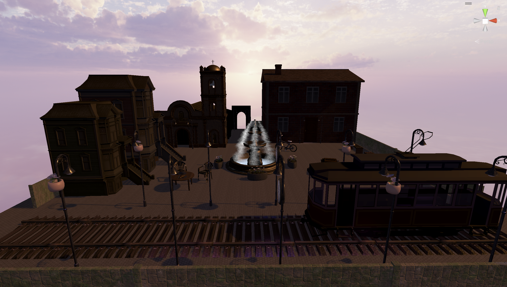
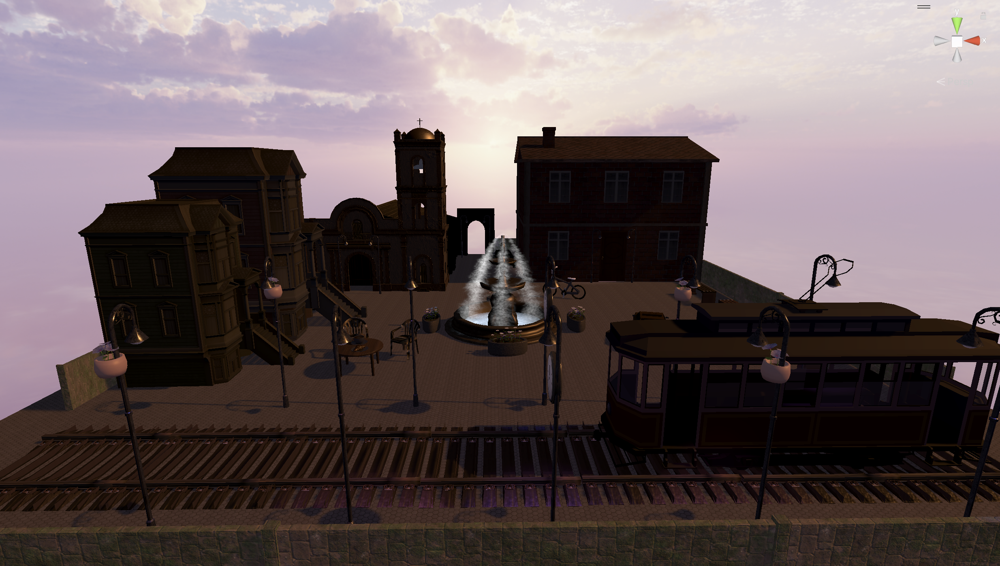

“Sound of Colour”is an interactive therapeutic VR game where the user becomes the teenage colour-blind girl who dreams of becoming a foley artist. The user goes on a quest to search for different sounds while colouring different areas in her town every time she finds a sound source to complete her soundscape project.
Game Progressions
The game progresses as the player finishes colouring each area and moves on to the next area. The user starts their quest from her house garden and moves towards the whole town. Every time the user completes each stage, the wavelength in the top right corner becomes longer which shows they are getting closer to the destination and completion of the soundscape project. Throughout the game, the user gets to navigate through a house garden, lake park, and square searching for different sound sources each area provides by deep-listening to the spatialized sound.
Motivation
The project intended to use the features of VR first- person view, such as subjective visuals and surround audio, to foster awareness of colour blindness. The VR video is showcased at a video exhibition at the Sawchuck Theatre.